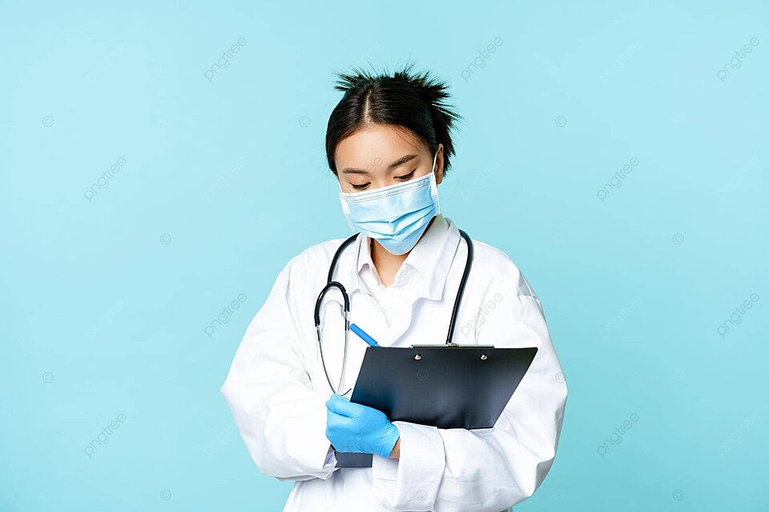

الإنسان المصدر الوحيد للدم ولا يوجد بديل صناعي لتعويضهم
ما بين كل 10 بيدخلوا المستشفى في 1 محتاج نقل دم
في مرضى محتاجين دم بشكل مستمر زي أنيميا البحر المتوسط ، و انيميا الخلايا المنجلايا ، وانيميا فشل النخاع و غيرها
ده غير أن دمك هيستفيد منه 4 مرضى لو فصلنا مكوناته
إنسان بالغ (18←50 سنة )، وزنه مناسب (50 كجم كحد أدنى ) ،سليم لا يعاني من اي أمراض مزمنة ،
نسبة الهيموجلوبين مناسبة: الذكور 13←17.5، الإناث 12←16.5
قسط كافي من النوم ليلة التبرع
وجبة متوازنة قبل التبرع
شرب سوائل أكتر من المعتاد قبل التبرع و بعد التبرع (خصوصا بعد 4 ساعات من التبرع)
تجنب أى مجهود بدنى عنيف لمدة 24 ساعة
ترك الضمادة على مكان سحب الدم لمدة 6- 12 ساعة
بعد التبرع و لمدة ساعتين يفضل تجنب التدخين و التعرض المباشر لأشعة الشمس
يمكنك ممارسة الانشطة اليومية المعتادة مع تجنب المجهود الزائد
خطوات التبرع بسيطة جدا:
ملأ الاستبيان ( إجاباتك الدقيقة تضمن سلامتك و سلامة من يصله الدم )
قياس نسبة الهيموجلوبين
فحص طبي يشمل قياس الضغط و الوزن و الحرارة و النبض
سحب الدم
استراحة خفيفة بعد التبرع و تناول السوائل
على حسب متبرع بالدم ولا مشتقاته:
الدم ← ينشط نخاع العظام لتعويضهم ليصل إلى النسبة الطبيعية من 4←8 أسابيع
البلازما يتم تعويضها فور التبرع لتصل إلى معدلها الطبيعي خلال 24←36 ساعة
الدم لا يباع في المستشفيات الجامعية و المستشفيات العامة و ما يتكلفه الأهل نسبة ضئيلة من تكلفة التحاليل التي تجرى على الدم ( نوع الفصيلة ، و فيروسات الكبد B&C، و الايدز ، و الزهري )
التبرع بالدم التطوعي أهم وسيلة لمكافحة ظاهرة الاتجار بالدم و السوق السوداء
في حالة تبرعك بالدم لطفل معين تقدر تنزل تشوف الطفل و هو مستلم الدم و عليه اسم حضرتك و الباركود .
ده غير كمان أنه يصرف مجانا لمرضى التأمين الصحي والانيميا الوراثية المزمنة